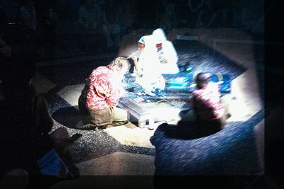
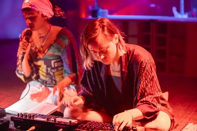
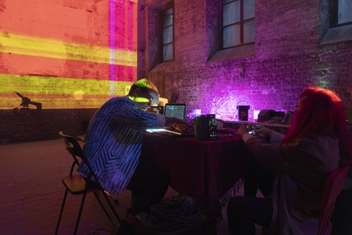
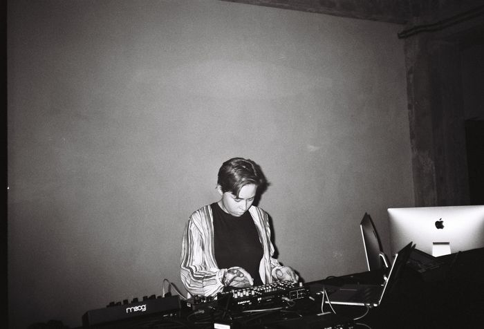
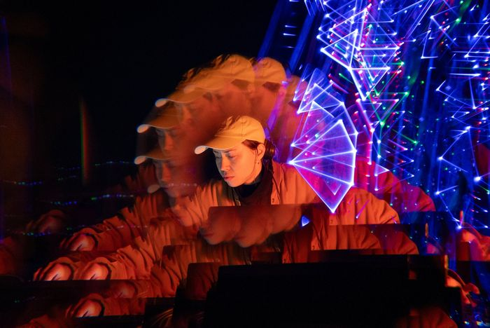
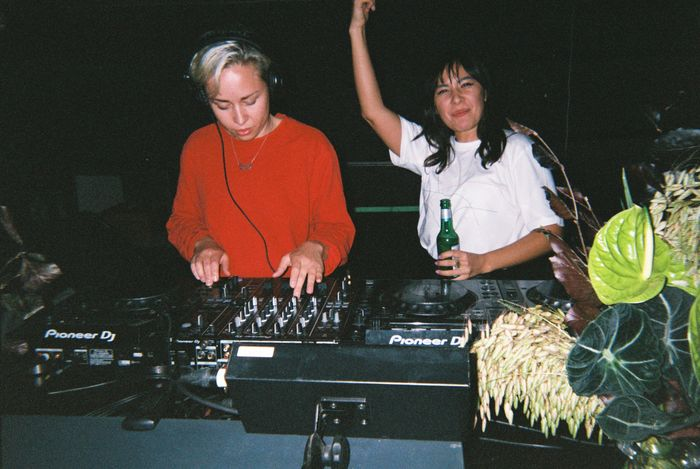
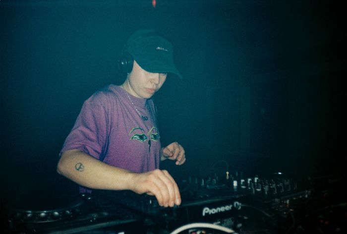

Live
- 14 Jul 2026gega.fisk, Open Lab, Silent Green
- 5 Jun 2026gega.fisk, 90mil
- 17 May 2026gega.fisk, Kwia
- 28 Mar 2026gega.fisk, Dwam, 90mil
- 3 Nov 2023with Xristina Sarli, Catharsis 2.0 LIVE, Salong Rouge, Kit Kat Club
- 20 Aug 2023FLOW Open Stage, Kanal Wagenburg
- 27 May 2023with Xristina Sarli, Mythcelium Festival, TopLab
- 4 Feb 2023Threads* Radio, Vorspiel, live stream
- 13 Jan 2023In the Sea of ~Voices: laboratory performance program #3, Liebling 12
- 29 Oct 2022with Nadi Nicoco, The Gender Project, Alte Münze
- 5 Oct 2022Keine Zeit Drone, AL.Berlin
- 17 Aug 2022with Nadi Nicoco, Friends of Friends, AL.Berlin
- 12 Mar 2022with Nadi Nicoco, Keine Zeit, AL.Berlin
- 18 Sep 2021Abstrakte Visuelle Referenz with Modular Synthesizer Ensemble, Superbooth
- 15 Sep 2020Acousmatic Bush, Plänterwald
- 9 Jun 2020with Eliana Caporalini, LAG, live stream
- Jun 2019Signals Festival, Funkhaus




DJ (selected gigs)
- 29 Oct 2026Night District, Crack Bellmer, Berlin
- 3 Jul 2026Khawa Klubnacht خاوة كلُبّنَختْ, Marmor Bar, Berlin
- 2 Apr 2026Habibi’s House, Metropol, Berlin
- 17 Feb 2026Project Equilibrio x Kwia, Berlin
- 6 Jan 2026Jellyzone NYE Afterparty, Cairo Jazz Club, Egypt
- 2 Jan 2026Jellyzone NYE, Fayoum, Egypt
- 5 Sep 2025No_Stone, Panke, Berlin
- 8 Aug 2025AL.Berlin x JK (secret location), Berlin
- 26 Jul 2025Acid Reflux x Foggy, Open Air, Berlin
- 21 Mar 2025with AL.Crew, Boum Du Boum, Marseille, France
- 27 Feb 2025Fear of Silence x Green Room, OHM, Berlin
- 26 Jan 2025The Biscuit Mixer (secret location, Neukölln), Berlin
- 18 Oct 2024Akii b2b fisk, Diskota Forte (secret location, Neukölln), Berlin
- 2 Feb 2024Akii b2b fisk, Trip the Light, Zur Klappe, Berlin
- 2 Dec 2023N0FU7UR3, Fitzroy, Berlin
- 2 Sep 2023with AL.Crew, İÇ İÇE x AL.Berlin, Mensch Meier, Berlin
- 10 Jun 2023with AL.Crew, Import Export, Munich
- 28 Apr 2023Dry, Re:mise, Berlin
- 11 Nov 2022Soul Feeder x Dry – Xtracare, Re:mise, Berlin
- 21 Oct 2022Sønder x NoFutureBerlin, Re:mise, Berlin
- 21 Apr 2022b2b Lyndon Lewis, Drums @Work, Kulturhaus Kili, Berlin


